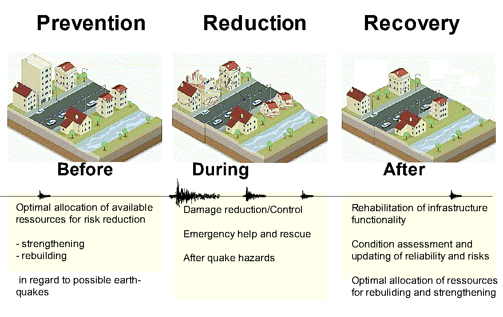
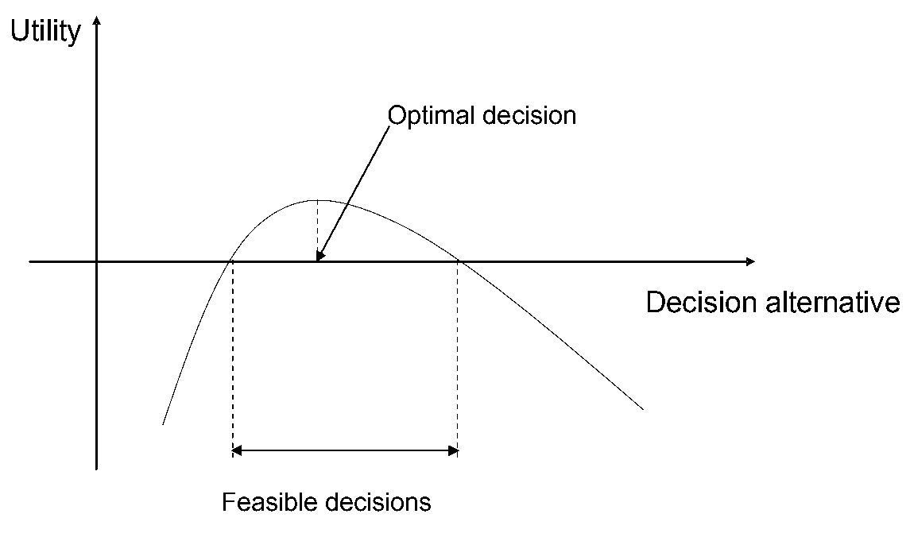

2 Framework for risk assessment#
2.1 Engineering Risk assessment and decision making#
The development and management of the societal infrastructure is a central task for the continued success of society. The decision processes involved in this task concern all aspects of managing and performing the planning, investigations, designing, manufacturing, execution, operations, maintenance and decommissioning of objects of societal infrastructure, such as traffic infra-structure, housing, power generation, power distribution systems and water distribution systems. The main objective from a societal perspective by such activities is to improve the quality of life of the individuals of society both for the present and the future generations. From the perspective of individual projects the objective may simply be to obtain a maximal positive economic return of investments.
Decision making for the purpose of assessing and managing risks should be seen relative to the occurrence of hazards; i.e. risk management in the situations before, during and after the events of hazards. This is because the possible decision alternatives or boundary conditions for decision making change over the corresponding time frame. Before a hazard occurs the issue of concern is to optimize investments into so-called preventive measures such as e.g. protecting societal assets, adequately designing and strengthening societal infrastructure as well as developing preparedness and emergency strategies. During the event of a hazard the issue is to limit consequences by containing damages and by means of rescue, evacuation and aid actions. After a hazard event, the situation is to some degree comparable to the situation before the event, however, the issue here is to decide on the rehabilitation of the losses and functionalities and to reconsider strategies for prevention measures. In Figure 1 the different decision situations and the focus of earthquake risk management is illustrated as an example.

If all aspects of the decision problem would be known with certainty, the identification of optimal decisions would be straightforward by means of traditional cost-benefit analysis. However, due to the fact that our understanding of the problems involved in the decision problems often is far less than perfect and that we are only able to model the involved processes of physical phenomena as well as human interactions in rather uncertain terms, the decision problems in engineering is subject to significant uncertainty. Due to this, it is not possible to assess the outcomes of decisions in certain terms. There is no way to assess with certainty the consequences resulting from the decisions we take. However, what can be assessed are the risks associated with the different decision alternatives. Based on risk assessments, decision alternatives may thereby be consistently ranked. If the concept of risk as the simple product between probability of occurrence of an event with consequences and the consequence of the event is widened to include also the aspects of the benefit achieved from the decisions, then risk may be related directly to the concept of utility from the economic decision theory and a whole methodical framework is made available for the consistent identification of optimal decisions. This framework is considered the theoretical basis for risk based decision making and the following chapters are concerned about the application of this for the purpose of risk management in engineering.
2.2 Decisions and decision maker#
A decision may be understood as a committed allocation of resources. The decision maker is an authority or person who has authority over the resources being allocated and responsibility for the consequences of the decision to third parties. The intention of the decision maker is to meet some objective, the value of which is at least in balance with the resources allocated by the decision. The decision maker faces the problem of choosing between a set of decision alternatives which may lead to different consequences in terms of losses and benefits. The objective aimed for by the decision making represents the preference of the decision maker in weighing the different attributes which may be associated with the possible consequences of the decision alternatives. It is thus clear that the formulation of the decision problem will depend very much on the decision maker. Who are the stakeholder, the beneficiaries and the responsible parties? Each possible decision maker will have different viewpoints in regard to preferences, attributes and objectives. It is important to identify the decision maker, since the selection and weighting of attributes must be made on behalf of the decision maker. Engineering decision making and risk assessment for the management of hazards is usually performed on behalf of society. It is thus useful to consider a society as an entity of people for which common preferences may be identified, exogenous boundary conditions are the same and which share common resources. It is clear that this definition may be applied to unions of states or countries, individual states and countries as well as local communities depending on the context of the decision making, however, it is seen that the geographical limitations are not essential, even though they often in reality are implicitly given by the other attributes. Considering a state or a country as a society it may be realized that such a society may comprise a hierarchical structure of societies defined at lower levels, such as cantons, municipalities and communities; each society with their set of attributes partly defined through the societies at higher level.
The following represents six general decision making levels. However, a further specification of the possible decision makers may depend on the political structure of the considered country.
Supranational authority
National authority and/or regulatory agencies
International private company
Local authority
Private owner
Private operator
Specific stakeholders
The decision might not succeed in meeting the objective; one might allocate resources and yet, for a number of reasons, not achieve the objectives. The decision maker might have several conflicting objectives. The degree by which an objective is achieved is measured in terms of attributes (or criteria).
2.3 Attributes of decision outcomes#
There are essentially three types of attributes - natural, constructed and proxy. Natural attributes are those having a common interpretation to everyone (cost in dollars, number of fatalities and other measurable quantities). For many important objectives, such as improving image and increasing international prestige, it is difficult or impossible to come up with natural attributes. The attributes to be used must essentially define what is meant by the objective. Constructed attributes may be used for this, these are made up of verbal descriptions of several distinct levels of impact that directly indicate the degree to which the associated objective is achieved and a numerical indicator is assigned to these levels. Examples of constructed attributes turning into natural attributes with time and use are the gross national product GNP (aggregate of several factors to indicate economic activity of a country), the Dow Jones industrial average etc. Finally, there are cases where it is difficult to identify either type of attribute for a given objective. In these cases indirect measurements may be used. The attributes used to indicate the degree to which the objective is achieved are called proxy attributes. When an attribute is used as proxy attribute for a fundamental objective, levels of that attribute are valued only for their perceived relationship to the achievement of that fundamental objective. The decision maker will make decisions consistent with her/his values, which are those things that are important to her/him, especially those that are relevant to her/his decision. A common value is money, according to which the decision maker will attempt to increase his wealth. Others might be personal, such as happiness or security, or social, such as fairness. .
2.4 Preferences among attributes - utility#
Having determined the set of attributes, the objectives must be quantified with a value/utility model. This is done by means of converting the attribute values to a value scale by means of judgment of relative value or preference strength. The value scale is often referred to as a utility function. In some cases it may not appear obvious how to directly transfer different attribute values into one common value scale. To overcome this apparent problem, it is possible to consider multi-attribute decision problems. However, it is emphasized that the solution to a multi-attribute will imply a weighing of the different attributes against each other and more transparency in the decision process is thus achieved by making this weighing directly.
The multi-attribute value problem is a problem of value trade-offs. These trade-offs can be systematically structured in utility functions. These are scalar valued functions defined on the consequence space, which serve to compare various levels of the different attributes indirectly. Given the utility function the decision maker’s problem is to choose that alternative from the space of feasible alternatives, which maximizes the expected utility.
The expected utility is used as a relative measure, making it possible to choose between various actions. The action with the largest expected utility will be chosen from among the possible actions. Thus, no absolute criterion for the acceptability of the considered action is given from decision theory.
2.5 Constraints on decision making#
A decision analysis as such is a relative comparison of the defined alternatives from which the best alternative will be recommended. However, this does not ensure that the risk of the best alternative is acceptable with respect to e.g. the safety of the individual. In order to secure that e.g. the level of safety for persons is not violated, the corresponding risk can be calculated and checked against specified maximum levels. These levels should be regarded as basic constraints on the decision-making process.
2.6 Feasibility and optimality#
Different decision alternatives will imply different potential losses and potential incomes. The representation of risk in terms of expected utility facilitates decision making in correspondence with the preferences of the decision maker in accordance with the decision theory. In Figure 2 an illustration is given of the variation of utility, measured in terms of expected benefit of an activity, as a function of different decision alternatives.

Decisions which do not yield a positive benefit should clearly not be chosen. Optimally, the decision yielding the largest utility is selected, but, as outlined in the foregoing, there could be constraints on the decision alternatives which are not explicitly included in the formulation of the utility function. In these cases not all feasible decision may be acceptable. This is considered in more detail in Section 4.5.